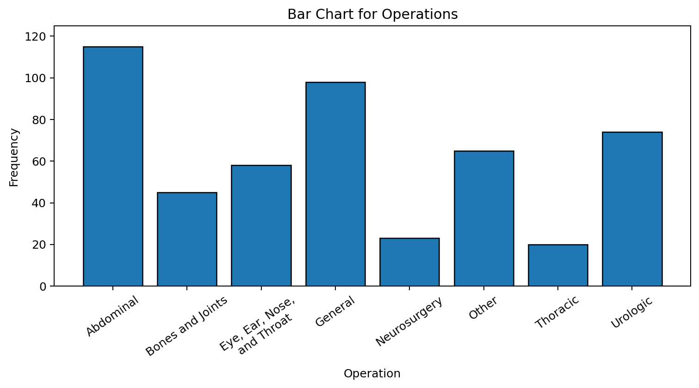
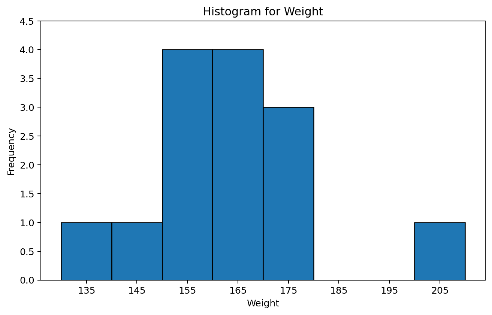
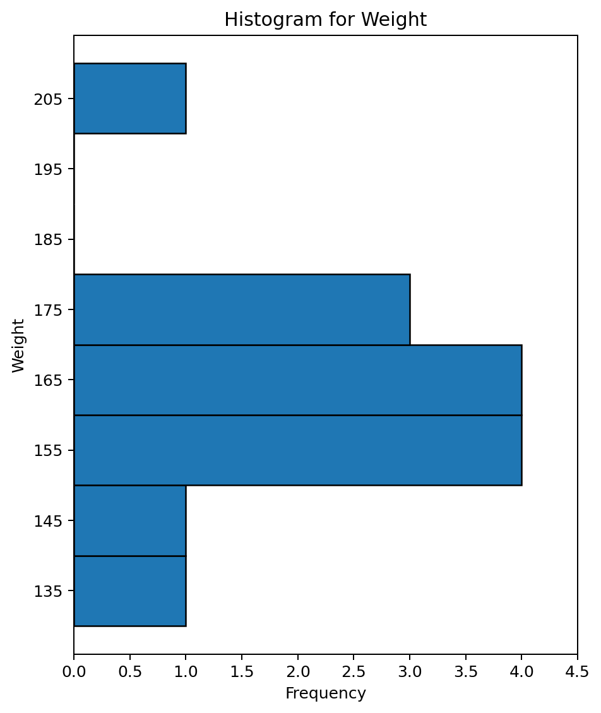
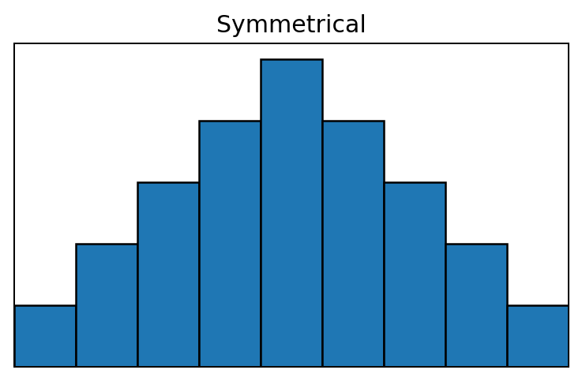
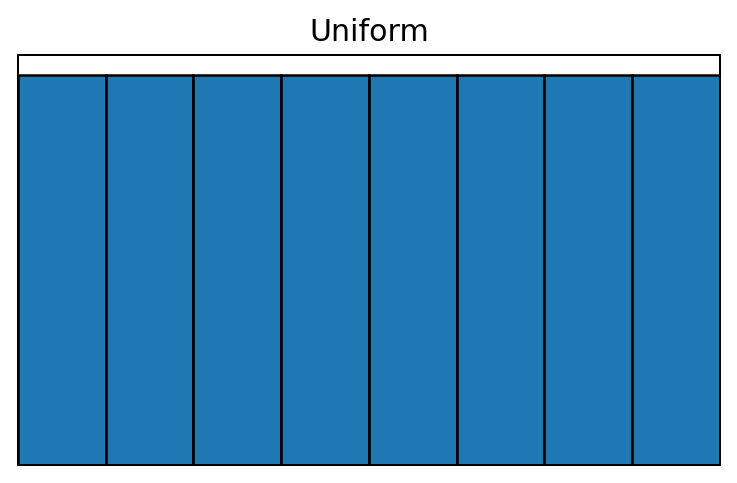
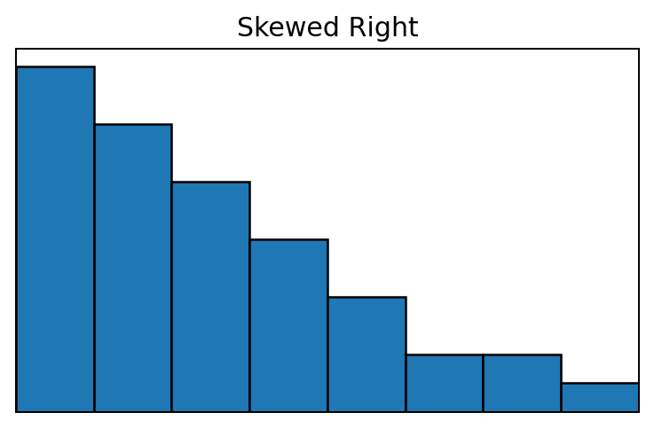
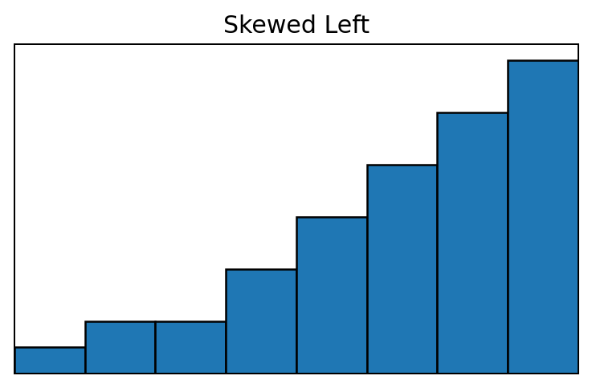
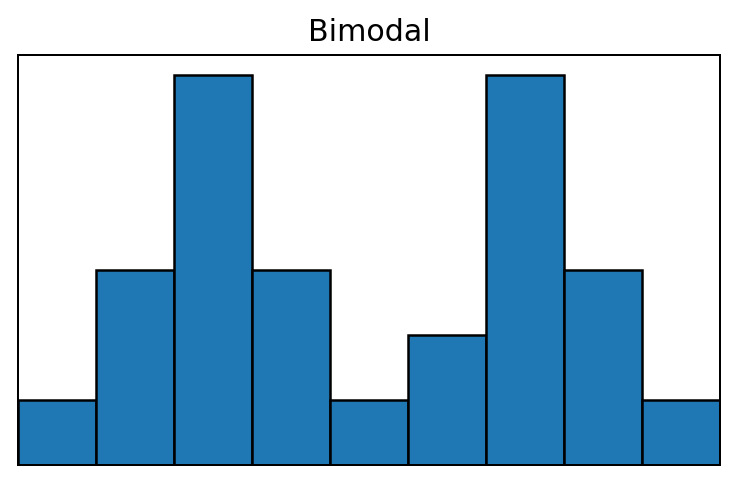

Example
Identify the extreme value in the following data.
14, 15, 17, 21, 60, 23, 25
Show Answer
The extreme value is 60.
Methods for Describing Sets of Data
We are now to the point in the class where we will begin looking at descriptive statistics. Remember that descriptive statistics are methods of summarizing a set of data. One way to do that is graphically. The main reason statisticians use graphs is to look at the distribution of data.
The following qualitative data set will be utilized in order to illustrate a bar chart. The variable of interest in this illustration is type of operation (data is non-numerical and was collected for a one year period from a single hospital). Qualitative data is commonly summarized with either frequencies or percentages which are both identified in the following table.
| Type of operation | Frequency | Percentage |
|---|---|---|
| Abdominal | 115 | 23.1 |
| Bones and joints | 45 | 9.0 |
| Eye, ear, nose, and throat | 58 | 11.6 |
| General | 98 | 19.7 |
| Neurosurgery | 23 | 4.6 |
| Other | 65 | 13.1 |
| Thoracic | 20 | 4.0 |
| Urologic | 74 | 14.9 |
| Total | 498 | 100.0 |

The goal with these graphs is to look at the distribution for a single quantitative variable. When looking at the graphs presented, it is important to identify if there are extreme values in the data and the shape of the distribution.
Identify the extreme value in the following data.
14, 15, 17, 21, 60, 23, 25
The extreme value is 60.
The impact of an extreme value can be great. Suppose we want to estimate the average income for this class. If a billionaire was in the class, then their income would be an extreme value. That would make the average appear very high simply because of one observation.
14 male weights in pounds: 139,153,179,201,163,168,157,170,172,165,145,155,161,151
In this case the first two digits of each number represent the stems and the last digit represents the leaves. The stem-and-leaf follows.
Notice in the stem-and-leaf plot it is easy to identify the one extreme value of 201. If a data point is separated from the rest of the data by at least on empty class (in this case two) then it is considered an extreme value. The shape is identified by looking at the pattern created with the numbers. This will be discussed later in this section.
| Weight | Frequency |
|---|---|
| 130 but less than 140 | 1 |
| 140 but less than 150 | 1 |
| 150 but less than 160 | 4 |
| 160 but less than 170 | 4 |
| 170 but less than 180 | 3 |
| 180 but less than 190 | 0 |
| 190 but less than 200 | 0 |
| 200 but less than 210 | 1 |
| Total | 14 |

It is important to understand how the above histogram was created based on the frequency distribution. It is also important to see how it is similar to the stem-and-leaf. Notice the same extreme and shape would be identified if the graph is turned as can be seen below.






The sum of values, x₁ + x₂ + ⋯ + xₙ, can be denoted as
Select 4 students and ask “how many brothers and sisters do you have?”
Data: 2,3,1,3
x₁ = 2 x₂ = 3 x₃ = 1 x₄ = 3
In statistics many times we leave off the index in the summation notation. This is because the sum is almost always taken over the entire sample (1 to n). Therefore, when you see a sum written without the index, you should assume it is 1 to n. For this class all sums will be over the sample size. This means that the above sum will commonly be written as:
Solve the following
a. ∑4x = 4∑x = 4(9) = 36
b. ∑(x + 3) = ∑x + ∑3 = 9 + 4(3) = 21
c. ∑(4x + 3) = 4∑x + ∑3 = 4(9) + 4(3) = 48
d. ∑(4x + 3)² = ∑(16x² + 24x + 9) = 16∑x² + 24∑x + ∑9 = 16(23) + 24(9) + 4(9) = 620
We will now begin calculating statistics. Remember a statistic is a numerical characteristic of a sample. These are descriptive statistics since they will summarize the data in the sample.
A measure of central tendency is a measure of average or typical value. The three most common measures of central tendency are the mean, median, and mode which you have probably seen before. We will discuss these values along with the midrange.
Back to number of siblings Data: 2,3,1,3
Calculate the mean.
Do you think the mean is a good measure of center for this data?
x̄ = (2 + 3 + 1 + 3) / 4 = 9 / 4 = 2.25
Seems like a reasonable measure of center in this case. With a value of 1, a value of 2, and two values of 3, we would expect the center to be between 1 and 3. Since there are two values of 3 we would expect it to be a little closer to 3 than 1. Also, there are two data values below the mean and two above the mean.
Suppose we had selected a 5th person for our sample which had 10 siblings.
New Data: 2,3,1,3,10
Calculate the mean.
Do you think the mean is a good measure of center for this data?
x̄ = (2 + 3 + 1 + 3 + 10) / 5 = 19 / 5 = 3.8
In this case it does not seem like a reasonable measure. Notice the mean is above every data point except for the value of 10. This value would be identified as extreme since it is not typical to have 10 sibling. The mean is not a good measure of center when extreme values are present in the data set.
Back to number of siblings Data: 2,3,1,3
Solve for the median.
1,2,3,3
x̃ = (2 + 3) / 2 = 2.5
New Data: 2,3,1,3,10
Solve for the median.
1,2,3,3,10
x̃ = 3
Because of the characteristics of the mean and median, if extreme scores exist in a data set the median is a better measure of central tendency.
If extreme scores are unlikely, the mean varies less from sample to sample than the median and is a better measure of center.
Data: 2,3,1,3
New Data: 2,3,1,3,10
Calculate the mode for the above data sets.
Mode = 3 (for both the Data and New Data)
The one advantage of using the mode is it can be used for qualitative data and that is when it should be used. For example if I say the average student in this class is female, what does that tell you? It just means that there are more females than males or the mode is female. The mean or median cannot be used for qualitative data.
Data: 2,3,1,3
New Data: 2,3,1,3,10
Calculate the midrange for the above data sets.
For Data: Midrange = (1 + 3) / 2 = 2
For New Data: Midrange = (1 + 10) / 2 = 5.5
The midrange is utilized to illustrate that there are many statistics available to choose from, but some are much better than others. The midrange is not a very good measure of center for most data sets. Think about it. You may have 1000 data points. You only select two of those data points to calculate the midrange and the two you pick are the most extreme data points. The midrange is totally dependent on extreme scores. The only time it is a good measure is when the data is perfectly symmetric. In practice, perfect symmetry is very rare.